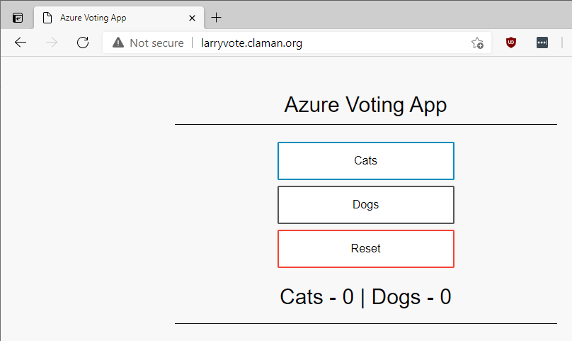

Easily create DNS names with Azure Kubernetes Service
- azure aks
When working with Azure Kubernetes Service (AKS), there are lots and lots of examples of how to create a loadbalancer service with public IP address. Most, if not all, of these examples recommend that you access the service by IP address rather than by using a DNS name.
I was recently leading a workshop which covered this topic, and I wondered if there was an easy way to get AKS to assign a DNS name for a loadbalancer service. It turns out, there is, but it’s not documented well and is hidden within the AKS documentation.
The method is documented on this page, and it’s actually pretty straightforward to use. The trick is to set the following metadata annotation on your service:
metadata:
annotations:
service.beta.kubernetes.io/azure-dns-label-name: yourchosendnsname
By using this annotation, AKS will create a DNS record of the form [yourchosendnsname].[location].cloudapp.azure.com.
Walk-Through
Let’s walk through an example by deploying the sample ‘Azure Voting App’ from the Azure Documentation:
kubectl apply -f https://raw.githubusercontent.com/Azure-Samples/azure-voting-app-redis/master/azure-vote-all-in-one-redis.yaml
kubectl get services
NAME TYPE CLUSTER-IP EXTERNAL-IP PORT(S) AGE
azure-vote-back ClusterIP 10.0.73.110 <none> 6379/TCP 7s
azure-vote-front LoadBalancer 10.0.135.119 52.251.9.116 80:30118/TCP 7s
kubernetes ClusterIP 10.0.0.1 <none> 443/TCP 10m
As expected, the azure-vote-front service is available via a public IP. Now, let’s modify the service definition to use the annotation; I’m going to use the label larryvote, which should create the dns record larryvote.eastus2.cloudapp.com:
kubectl apply -f - <<EOF
apiVersion: v1
kind: Service
metadata:
name: azure-vote-front
annotations:
service.beta.kubernetes.io/azure-dns-label-name: larryvote
spec:
type: LoadBalancer
ports:
- port: 80
selector:
app: azure-vote-front
EOF
Let’s check to see if it worked:
> nslookup larryvote.eastus2.cloudapp.azure.com
Non-authoritative answer:
Name: larryvote.eastus2.cloudapp.azure.com
Address: 52.251.9.116
Yep, it worked! You next thought may be, “That’s great, but I don’t want to use that ugly domain name. How can I use my own domain name?” The solution to this is also straightforward: use a CNAME.
Using a CNAME
In my case, I own the domain claman.org. So I simply need to create a cname for larryvote.claman.org pointing to larryvote.eastus2.cloudapp.azure.com. Let’s check what that looks like:
> nslookup larryvote.claman.org
Non-authoritative answer:
larryvote.claman.org canonical name = larryvote.eastus2.cloudapp.azure.com.
Name: larryvote.eastus2.cloudapp.azure.com
Address: 52.251.9.116
Easy Peasy! Of course you can access the web page via this name: 
DNS Labels for Nginx Ingress
Suppose you want to use an nginx ingress rather than a load balancer service? You can use this same method, but it’s slightly more complicated. Again, it’s documented, but not well, on this page. Specifically, you need to set controller.service.annotations."service\.beta\.kubernetes\.io/azure-dns-label-name"="yourdnslabel", where yourdnslabel is the dns name you want to use.